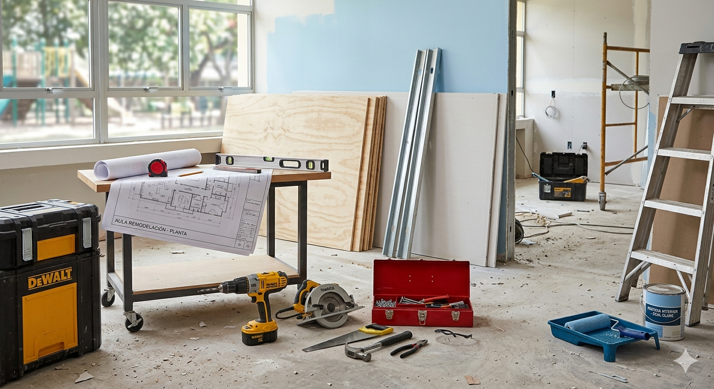

Centro de interés o temática
El proyecto se centra en la planificación y simulación de una reforma real del aula-taller, concretamente el pintado de paredes y el enlosado del suelo. A través de esta propuesta el alumnado se enfrenta a una situación práctica que conecta directamente con el entorno profesional de los oficios técnicos.
El centro de interés consiste en analizar, medir y planificar una intervención real en el espacio de trabajo, lo que permite comprender cómo se organizan las reformas en el ámbito profesional y cómo interactúan distintos gremios como electricistas, albañiles o pintores.
De este modo, el alumnado aprende a aplicar conocimientos matemáticos, técnicos y digitales en una situación cercana a la realidad laboral, desarrollando habilidades de planificación, resolución de problemas y trabajo en equipo.
Nivel al que va dirigido: 2º FP Grado Básico (Electricidad)
Esta Situación de Aprendizaje está dirigida al alumnado de 2º curso de Formación Profesional de Grado Básico en Electricidad.
En esta etapa educativa el alumnado necesita trabajar mediante situaciones prácticas y contextualizadas que conecten el aprendizaje con la realidad laboral. Un proyecto de reforma del propio taller resulta especialmente motivador, ya que permite aplicar conocimientos matemáticos, técnicos y organizativos a un entorno real que el alumnado conoce y utiliza diariamente.
Además, este tipo de actividades favorece el desarrollo de competencias clave en la FP Básica, como la autonomía, la resolución de problemas, el trabajo cooperativo y la responsabilidad en la ejecución de tareas.
Temporalización aproximada: 5-7 sesiones
El proyecto se desarrollará a lo largo de entre 5 y 7 sesiones de taller.
Durante este tiempo el alumnado irá avanzando progresivamente en las diferentes fases del proyecto:
- Análisis del espacio y toma de medidas reales del aula-taller
- Elaboración de planos sencillos a escala
- Cálculo de superficies y materiales necesarios
- Búsqueda de materiales y elaboración de un presupuesto aproximado
- Presentación final del proyecto de reforma.
Esta temporalización permite trabajar con calma cada fase del proceso, combinando el trabajo práctico con la reflexión sobre los cálculos y decisiones adoptadas.
Materia o materias implicadas
La materia principal implicada es Ciencias Aplicadas II, donde el alumnado trabaja contenidos relacionados con las matemáticas aplicadas y su utilización en contextos reales.
A través de este proyecto se aplican contenidos como:
- cálculo de áreas y perímetros
- uso de escalas en planos
- interpretación de medidas reales
- estimación de materiales y costes.
Además, el proyecto conecta con los contenidos técnicos propios del ciclo de Electricidad, ya que el alumnado debe tener en cuenta la organización del espacio de trabajo y la posible interacción con otras instalaciones presentes en el aula-taller.
Idioma: Castellano
El proyecto se desarrollará en castellano, ya que es la lengua vehicular del centro y facilita la comprensión de las explicaciones técnicas, la interpretación de planos y la elaboración del presupuesto del proyecto.
El uso del castellano permite además trabajar el vocabulario técnico propio del ámbito de las reformas, los materiales de construcción y la planificación de obras, contribuyendo al desarrollo de la competencia comunicativa en contextos profesionales.
Descripción general de lo que se pretende que el alumnado aprenda o trabaje
A lo largo de este proyecto el alumnado deberá planificar una reforma del aula-taller, centrada en el pintado de las paredes y el enlosado del suelo. Para ello trabajarán en pequeños grupos y desarrollarán distintas tareas propias de la planificación de una obra.
En primer lugar, el alumnado realizará la medición real del espacio, identificando paredes, suelos, obstáculos y elementos presentes en el taller. Posteriormente elaborarán planos sencillos a escala que representen el espacio del aula.
A partir de estos planos calcularán superficies, perímetros y cantidades de material necesarias, aplicando contenidos matemáticos de forma práctica. También realizarán una búsqueda de materiales en catálogos o páginas web, comparando precios y elaborando un presupuesto aproximado de la reforma.
Finalmente, cada grupo presentará su propuesta de reforma explicando los cálculos realizados, los materiales seleccionados y el coste estimado del proyecto.
Con esta actividad el alumnado desarrollará habilidades relacionadas con:
- la aplicación práctica de las matemáticas
- la representación gráfica de espacios
- la búsqueda de información técnica en internet
- la planificación de tareas
- el trabajo en equipo y la resolución de problemas.
Justificación
Este proyecto surge de la reflexión sobre la propia práctica docente y de la necesidad de plantear actividades más prácticas y contextualizadas, que conecten directamente con el entorno profesional del alumnado de Formación Profesional Básica.
En muchos casos, los contenidos matemáticos o técnicos se perciben como abstractos cuando se trabajan únicamente desde el libro de texto. Por ello, esta propuesta plantea una actividad basada en un problema real del propio entorno del alumnado, como es la planificación de una reforma del taller.
Además, el proyecto incorpora el uso de herramientas digitales para buscar materiales y precios, fomentando la autonomía del alumnado y el desarrollo de su competencia digital.
De esta manera, la actividad transforma los contenidos teóricos en una experiencia de aprendizaje significativa, en la que el alumnado puede comprender la utilidad real de los conocimientos adquiridos y desarrollar habilidades propias del ámbito profesional.